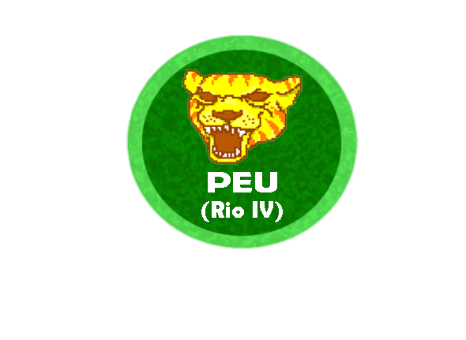

Parque Ecologico Urbano
El puma es una especie nativa para Norte América. La longitud total del cuerpo varía de 1.05 a 1.95 m, la cola puede medir de 66 a 78 cm de largo y el peso varía de 67 a 103 Kg en machos.
Es la orgullosa ave símbolo nacional de Estados Unidos, aunque estuvo al borde de la extinción en ese país. Durante muchas décadas, las águilas calvas fueron cazadas por deporte y para proteger las zonas de pesca.
Sus patas, que terminan en tres dedos, son fuertes y están adaptadas para la carrera. El plumaje es de color marrón grisáceo; al igual que las avestruces, tiene el cuello largo, la cabeza pequeña y un pico más bien fuerte.
Son animales mamíferos, dotados de cuatro extremidades prensiles y una cola, con un cuerpo cubierto de pelaje diverso.
Los vermilinguos, conocidos vulgarmente como osos hormigueros, osos palmeros, tamandúas o yurumíes, son un suborden de mamíferos placentarios del orden Pilosa. Son nativos de América Central y del norte y centro de Sudamérica; incluye dos familias, Cyclopedidae y Myrmecophagidae.
El loro es un ave que pertenece al orden de las psitaciformes, un grupo que incluye a aquellas especies de colores llamativos y pico encorvado que son prensoras: disponen de un par de dedos orientados hacia atrás en las patas y de fuertes mandíbulas.
El pavo real común, también conocido como pavo real de la India o pavo real de pecho azul, es una especie de ave galliforme de la familia Phasianidae, una de las dos especies del género Pavo.
La llama (Lama glama) es el pariente sudamericano del camello, aunque no tiene joroba. Es un animal muy fuerte que fue domesticado por los habitantes de los Andes. Sus parientes salvajes son los guanacos y las vicuñas.